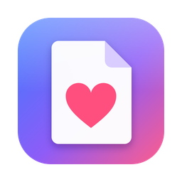
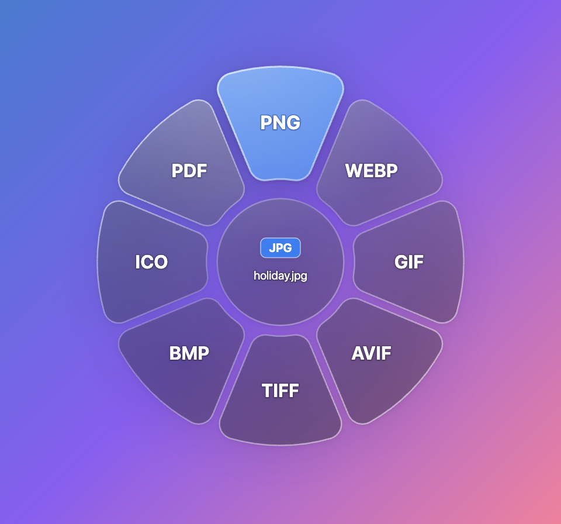

I love files - Mac (Apple Silicon).dmgI love files - Mac (Intel).dmgI love files - Windows Setup.exeNot sure which Mac you have? Click the Apple menu (top-left) → About This Mac. It says Chip: Apple M… or Processor: Intel.

Changed your mind? Let go in the middle of the ring, or press Esc. Big videos keep converting in the background and you get a notification when they’re ready.
For Excel, PowerPoint and older Word files, install the free LibreOffice (libreoffice.org). I love files picks it up automatically, and the ring shows a More… shortcut to it.